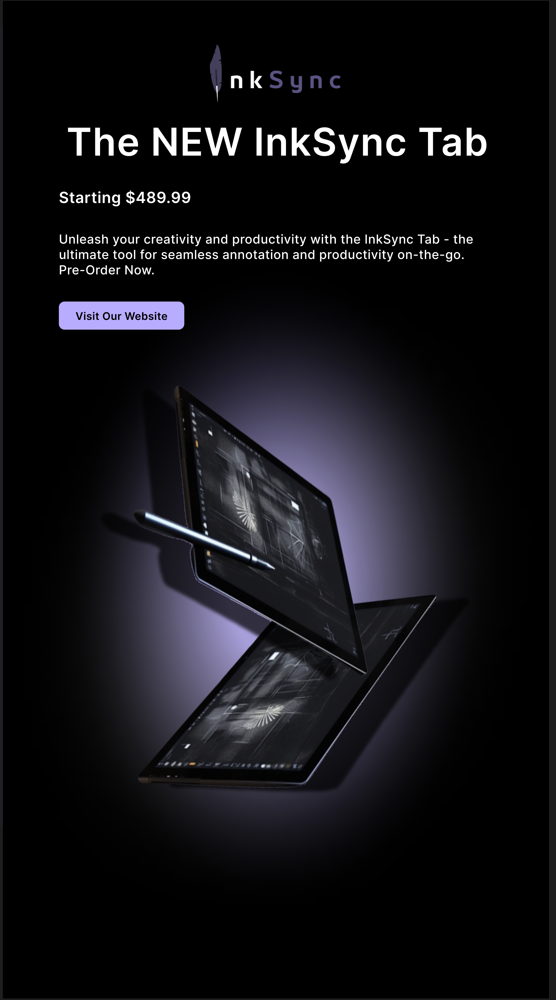

This webpage will demonstrate previous projects I have worked on — this will include writing projects as well design & web development projects.
Digital vs. Physical Contact Essay
In this essay, I argue against the opinion that virtual contact is capable of removing the need for us to meet physically and socalize.
InkSync
InkSync, an imaginary technologies company, was an idea me and friends came up with for a business project during 11th grade. The main goal of the company was to digitalize education by replacing text/notebooks with a highly-technological tablet that is equipped with a stylus that doesn't require charging.
The following shows a prototype design I made for the InkSync Companion App, which would allow users to access their InkSync Tab notes on the app:
The following shows the UI of InkSync Ai, which is as an educational-based machine learning system that is based on ChatGPT API. The whole purpose of InkSync Ai is to provide students with necessary information relating to their school subjects, provide creative ideas for projects, and prevent plagiarism:
The following shows a summarized-digital infographic of the InkSync Tab's features:
The following shows an Email Ad that I designed for InkSync's advertisement techniques:

My First Operational Website:
My passion for InkSync as a company did not stop at mere designs, but I took it even further by learning HTML & CSS and managing to code a completely operational website from the front-end's perspective.